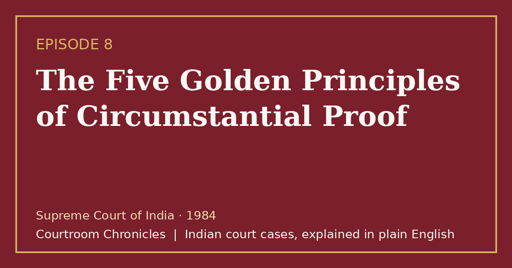

Episode 8 · 2026-10-11
The Five Golden Principles of Circumstantial Proof
When a young chemist dies of potassium cyanide poisoning, the Supreme Court defines the definitive five golden principles governing circumstantial evidence.

Listen
- Court
- Supreme Court of India
- Year
- 1984
- Legal Question
- Whether circumstantial evidence excluding suicide is required to convict for poisoning
- Key Forensic Evidence
- Toxicological detection of potassium cyanide and three personal letters
Key takeaways
- Circumstantial evidence must form an unbroken chain that rules out every reasonable hypothesis consistent with the innocence of the accused.
- In poisoning cases, the prosecution must strictly prove that the accused had physical possession of the specific toxic substance.
- A court cannot use a false or weak defense plea to fill in missing evidentiary links in the prosecution's case.
- Dying declarations and letters regarding circumstances of death are admissible to evaluate both homicidal and suicidal possibilities.
The case in brief
Barely four months after an arranged marriage, a young bride holding a master's degree in chemistry was discovered lifeless in her bedroom on an early summer morning. The family physician examined the body, noticed immediate rigor mortis without external signs of physical trauma, and refused to issue a death certificate. Subsequent toxicological analysis revealed that the deceased had ingested a fatal quantity of potassium cyanide.
Police investigators focused their attention on the husband, a chemical engineer managing an industrial chemical manufacturing unit who had maintained an intense extramarital relationship. The prosecution argued that the husband administered the lethal poison in darkness to escape the marriage, relying on personal letters written by the deceased describing marital isolation and distress. Both the trial court and the high court convicted the husband of murder and sentenced him to death.
On final appeal, the Supreme Court of India set aside the conviction and acquitted the husband, delivering the definitive judgment on circumstantial evidence in Indian jurisprudence. The apex court formulated the five golden principles, often described as the panchsheel of circumstantial proof, requiring every link in the evidentiary chain to be conclusively established. The bench held that suspicion, however grave, cannot substitute for legal proof, and that the prosecution cannot cure gaps in its case by pointing to a weak defense.
The court established four mandatory criteria for proving murder by poisoning, holding that the prosecution completely failed to prove that the husband ever possessed potassium cyanide. Furthermore, because the deceased was an accomplished chemist suffering from documented emotional depression, a reasonable hypothesis of suicide could not be ruled out. Applying the fundamental rule of criminal jurisprudence, the court ruled that where two reasonable views exist, the accused is entitled to the benefit of doubt.
Timeline
- The Arranged Marriage
A marriage is solemnized between a chemical engineer and an accomplished graduate in chemistry.
- The Fatal Morning
The bride is found deceased in the master bedroom, and toxicological analysis detects potassium cyanide.
- The Trial Court Sentence
The trial court finds the husband guilty of murder and imposes the death penalty.
- High Court Confirmation
The high court confirms the murder conviction and the capital sentence.
- The Supreme Court Acquittal
The Supreme Court of India acquits the husband and establishes the five golden principles of circumstantial evidence.
What the court decided
The Supreme Court of India allowed the appeal, set aside the conviction and death sentence, and acquitted the accused of all charges.
Key holdings
- Circumstantial evidence must satisfy the five golden principles: circumstances must be fully established, consistent only with guilt, conclusive, exclusive of other hypotheses, and unbroken.
- In a case of murder by poisoning, the prosecution must establish motive, death by poison, possession of the poison by the accused, and an opportunity to administer it.
- Suspicion, however strong or grave, cannot take the place of legal proof, and moral conviction cannot support a criminal judgment.
- Where the evidence leaves open two reasonable possibilities—one pointing to guilt and the other consistent with innocence—the accused is entitled to the benefit of doubt.
Legal principles
The Five Golden Principles of Circumstantial Evidence
Circumstances establishing guilt must be fully proven, conclusive in nature, consistent only with guilt, exclusive of any innocent hypothesis, and unbroken in their chain.
In this case: The court formulated this five-part test to overturn a capital conviction where the prosecution failed to prove the accused possessed the fatal poison.
Benefit of Doubt and Competing Hypotheses
When the evidence permits two plausible interpretations, one pointing to guilt and the other to innocence, the court must adopt the hypothesis favorable to the accused.
In this case: Because the evidence supported both homicidal administration and voluntary suicide by an educated chemist, the court gave the accused the benefit of doubt.
Relevancy of Ante-Mortem Statements on Circumstances of Death
Statements made by a deceased person regarding the circumstances of the transaction resulting in death are admissible, whether the death is homicide or suicide.
In this case: Letters written by the deceased bride detailing marital unhappiness were admitted as relevant evidence under statutory exceptions to the hearsay rule.
The law then and now
The alleged incident occurred in June 1982, and the trial and appeals were governed by the Indian Penal Code, 1860, the Code of Criminal Procedure, 1973, and the Indian Evidence Act, 1872. The new penal and evidence codes (Bharatiya Nyaya Sanhita, Bharatiya Nagarik Suraksha Sanhita, and Bharatiya Sakshya Adhiniyam) took effect on 1 July 2024 and apply prospectively.
Left: the law applied to this case. Right: the matching provision today (the new criminal codes apply only to offences on or after 1 July 2024).
Substantially unchanged; restructured under Chapter VI of the new penal code. See all 16 episodes on this provision →
Consolidated evidentiary definitions including 'proved', 'disproved', and 'not proved' under Section 2. See all 3 episodes on this provision →
- Indian Evidence Act, 1872Section 32Cases in which statement of relevant fact by person who is dead or cannot be found, etc., is relevantBharatiya Sakshya Adhiniyam, 2023Section 26Cases in which statement of relevant fact by person who is dead or cannot be found, etc., is relevant
Substantially unchanged; clause (a) covers statements relating to the cause of death or circumstances of the transaction. See all 2 episodes on this provision →
Sources
- Judgment of the Supreme Court of India, 1984
- Indian Penal Code, 1860 (High Court of Tripura Official Text)
- Bharatiya Nyaya Sanhita, 2023 and IPC Comparative Table (UP Police)
- Bharatiya Sakshya Adhiniyam, 2023 (High Court of Tripura Official Text)
- Bharatiya Sakshya Adhiniyam and Evidence Act Comparative Table (UP Police)